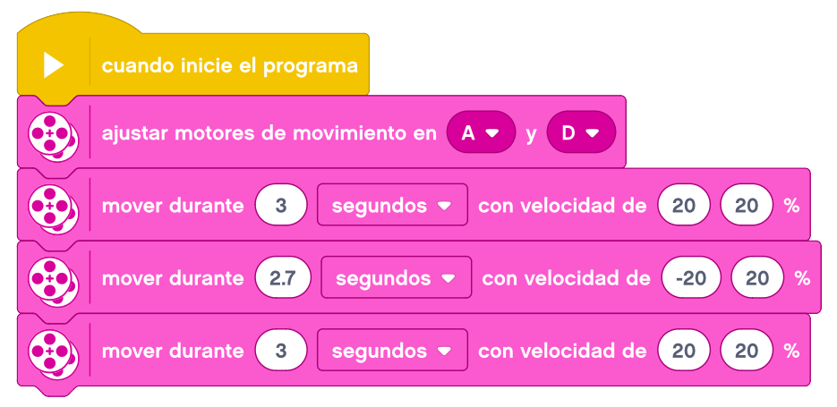

Empezaremos esta serie de proyectos con un vehículo que sea capaz de pasar por encima de un bloque de lego de 2x4 bloques (con piezas de 8x2 pines).
En esta actividad construiremos una base motriz sin instrucciones, ya que hemos montado ya muchas y no debe ser complicado para el alumno.

A continuación, mostramos una forma orientativa de hacer este montaje.
Le enganchamos los cables y podemos probar nuestro vehículo.
Lo programaríamos para que pasara por encima, y como reto añadido, que además de pasar diera la vuelta y
volviera a pasar otra vez por encima.

Tiene que funcionar de esta forma.